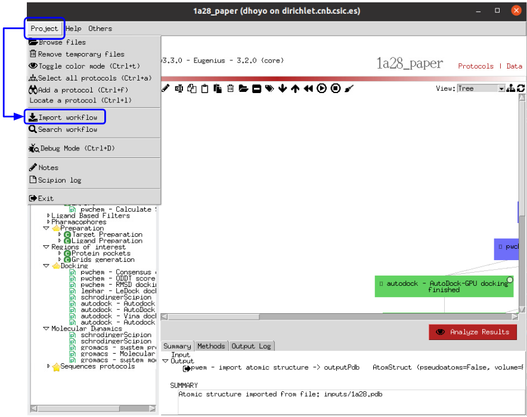
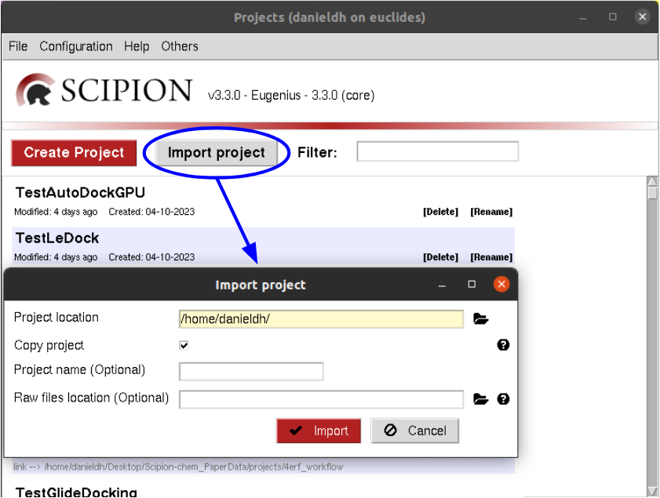

The workflows are directly importable by Scipion, although, to make them functional, you will need to have all the used plugins installed.
Because of storage limitations in this GitHub repo, these workflows are data empty, so the protocols are defined but
not run, and the results are yet missing. We provide this workflows in case you are interested in rerunning them, either
as they are or with any modification.
To do so, you can import the workflow from a scipion3 project, using “Project -> Import workflow” and selecting the json file.

Once you have imported the workflow, remember to redirect the input protocols to the actual paths of the input files contained in this repository.
For example, the pdb file imported in the “Import PDB” protocols or the sdf or mol2 files in the “Import Small Mols” protocols.
Scipion can directly recognize the structure of the downloaded folders (once unzipped), so you can directly import the project
from the project manager window (the one to appear when using the command “scipion3”) using the “Import project” button and
selecting the project folder i.e: 1a28_workflow

In this case, the project is self contained, so all the inputs are included and there is no need to change the paths for the input files.
The results of the “Show case” section for FABP4 workflow are subjected to further analysis outside Scipion in order to obtain the results commented in the publication.
Here, you can find the Python scripts used to parse and analyze the results in the Scipion project.
This folder section contains the Python scripts used to analyze the results of the VDS workflow described in section “Show case”, regarding the FABP4 dataset.
First, we extract the results from Scipion in a Pandas DataFrame object, which contains each of the docked poses as rows with information about its original molecule, whether it is an active or a decoy, the docking software that generated it and a column for each of the consensus docking protocols in the project determining if it is or not included in it.
The user must follow the convention names in the FABP4 workflow provided in order for it to work as expected.
Usage:
scipion3pythonextractData.py<projectName>
Output:
The output generated is a CSV file containing the DataFrame information.
Separately, we code a Jupyter notebook that is configured to open and analyze the results extracted in the previous section.
In there, the user can visualize several pieces of information extracted from the DataFrame, and the figures in the paper are plotted.
All the commented Scipion-chem plugins are built on the Scipion workflow engine, which can be found in
https://scipion.i2pc.es/ .
As stated in the paper, scipion-chem integrates a set of bioinformatic tools and
software inside the platform.
Most of this tools are open, and no license is required for their use, so Scipion-chem installs it automatically,
taking care of properly referencing all the sources.
In the case of the few licensed software, the user must install
either the programs or the license by themselves and tell Scipion-chem where the software is installed. More detailed
guides on how to proceed with the installations can be found in the repositories of each of the plugins.
A complete list of these software, organized by the plugins they are installed on, is described below. The versions
refer to the moment this document is being written, but updates are constantly being made.
scipion-chem: as the core plugin, it installs a wide set of tools.